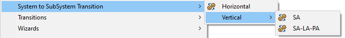
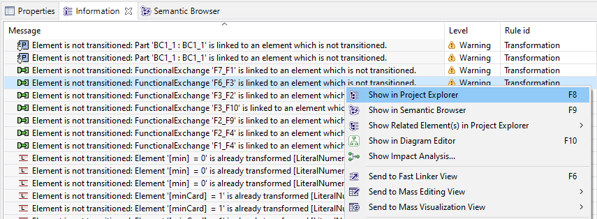
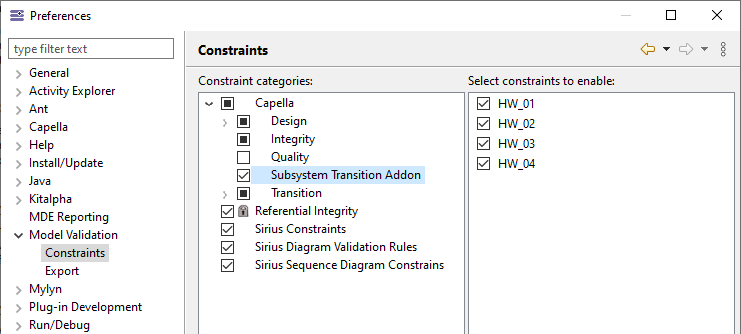

|
|
Warning: The Capella User Manual is currently being refactored. This page might contain obsolete diagram look and feel / user interface screenshots / references to Melody Advance, the ancestor of Capella. |
|
|
The System to Sub System transition is not integrated by default in Capella. This extension is available for download on the Capella website. |
Transitions are possible from one or several logical, physical components or one Configuration Item. The Multiphase Transition is only available from one or more selected node physical components.

A configuration dialog opens and allows, among others, to choose the target model.

Once the target project selected, a Diff/Merge dialog displays the the differences between the transformation result shown in the center and the target model shown on the right.
It is now possible to either selectively merge changes, or to merge all planned changes by pressing the "Apply" button.

Further information about the Diff/Merge tool can also be found in the Diff/Merge documentation
Once the transition performed, the Information view contains the listing of the actions performed. By right clicking on an action, the source and target object can be accessed:

The vertical transformation SA-LA-PA includes 4 validation rules that warn the user about inconsistent element allocations and deployments on target models. In general, these rules inspect the pre-allocation links generated by the multiphase transformation and crosscheck existing allocations and deployments against these pre-allocation links. A pre-allocation link is a kind of trace and thus filtered from the Capella Explorer by default. Each rule verifies a specific kind of allocation/deployment:
HW_01 - Logical Function Allocations
Checks if a Logical Function is allocated on the expected Logical Component.
HW_02 - Physical Component Deployment
Checks if a Behavioral Physical Component is deployed in the expected Node Physical Component.
HW_03 - Logical Functional Exchange Allocations
Checks if a Logical Functional Exchange is allocated on the expected Component Exchange.
HW_04 - Physical Component Exchange Allocations
Checks if a Physical Component Exchange is allocated on the expected Physical Link.
The validation rules can be enabled/disabled selectively by selecting Window->Preferences->Model Validation->Constraints. The multiphase transition rules can then be found under Capella->Subsystem Transition Addon:

To launch a validation, select a suitable model element (e.g. SystemEngineering) and choose Validate Model from its context menu.